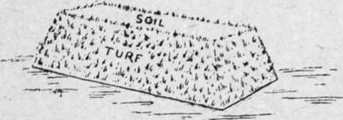

Chapter II. Artificial Beds And Borders, Boxes, Tubs, Barrels, Etc
Description
This section is from the book "Town Gardening", by Mary Hampden. Also available from Amazon: Town Gardening.
Chapter II. Artificial Beds And Borders, Boxes, Tubs, Barrels, Etc
The Art of 'Crocking.' Obtaining Compost. Paint Colours. Rockeries, Basket Beds. Arches and Pillars.
AGREAT deal of floral display can be created by the use of ornamental boxes, urns, tubs or hanging baskets alone. Artificial beds and borders are of course more effective still, because they hold more plants.
An Artificial Bed on Asphalt.
An artificial bed can be made anywhere, and on stone, brick, asphalt, or the leads of a roof, as simply as upon bad turf that is to be hidden or superfluous gravel. There must be first a layer of large stones with corner edges touching, that rainwater may be able to flow away ; if stones are laid with their sides touching they do not leave enough room for the water to flow through. Over these stones gardeners usually place torn-up old turves, top downwards, for these act like the charcoal in a filter. Next comes coarse earth, containing smaller bits of old turves and some little stones, and then the bed is made up of fine compost, but not dust-fine. In order to hold the earth up, in the form of a round, square or oblong bed, there must be a low bank of properly laid fresh turves, or a row of big slanted stones or strips of wood, solid or trellised ; or bricks may be employed.
A border is made similarly, only one side will be against a wall, and it should slope gently down from the wall, that wet may not lie at the back.
Any kind of box will make an ornamental receptacle for plants. Roses, tall perennials and shrubs need a three-foot or a two-foot depth of soil to grow in. Ramblers and other climbing roses, for instance, can be kept healthy in the very deep box or barrel for years ; a standard, or a vigorous Hybrid Perpetual or Hybrid Tea bush rose could not do long without a two-foot depth ; a small delicate Tea rose, or a dwarf polyantha, would be satisfied with a foot and a half or a foot. Roses often flourish in pots that have not as much depth, but then they can be repotted whenever the grower thinks best, and trees in boxes or artificial beds and borders are not usually disturbed.
Grocers sell big wooden boxes. To make one of these ready for plants there have to be holes, the size of a halfpenny, burnt out of the bottom by a red-hot poker, at four-inch intervals. In small boxes the holes for drainage should be smaller. Sometimes the wood is slit down here and there, but the hole system is safer. If the hot poker is used to char all the wood of the bottom and the lower parts of the sides, it will not be so likely to rot.
'Crocking,' as it is called, is one of the first tasks a young gardener has to learn, and it is quite an art, for if the pieces of broken potsherds are laid clumsily over the drainage holes the water will be checked, while if the holes are not partly covered the soil will be washed through, and that will choke them. A concave piece of potsherd is usually laid, scooped-out side downwards, over each hole in a box or tub, and over the one hole in a flower-pot. Then two or three more bits, half the size of the one, arc slanted against it; above these the skilled crocker casts a quarter or half a handful of smaller pieces, letting them fall lightly, and then the coarse bits of compost go in, followed by the next-coarse earth or potting mould, and finally the surface soil.
The mould should always be used just damp enough to crumble between the fingers, not stick to them. Florists and nurserymen sell potting soil, or potting loam as it is often called, for about half a crown a bushel for the best. The amateur gardener had better tell the shopman exactly what he wants potting soil for ; then the right sort will be supplied. Some has manure mixed in, some can contain peat, when peat is desirable, and the quantity of other ingredients, leaf mould, fine or coarse silver sand, or road grit, also vary.
When old oil barrels are used for plants they have to be purified. This is done by turning one upside down over a lighted newspaper or wisp of straw, the flames from which will lick up all the oiliness and just char the inside wood. Halved barrels make nice-looking tubs.
It is always wise to stand receptacles on bits of brick or blocks of wood—three or more to each—so as to raise them above the ground. Pots may be stood on a slate each, to keep worms from getting in through the drainage hole; but large pots do better poised between two wooden laths laid on the ground. Window-boxes should be very slightly slanted by bits of wood placed underneath.
It is seldom that one sees a really artistic green paint used for colouring tubs and boxes. A crude bluish-myrtle always clashes with the leaf shades ; it is just leaves that the artist-carpenter should study as a colour chart; if he matches the greens of ivies, plane trees, or aspidistras, for example, he cannot err. Brown is a suitable colour for painting plant receptacles, only too many all brown alike give a spotty effect to a scene. Stone grey can be used with advantage in the vicinity of bright red bricks and tiles, though by a grey, dun, or cream town house it has a depressingly cold appearance. White enamelled tubs are pretty, and well suited to some trim modern house-fronts.
A basket-bed, such as our ancestors frequently made, is merely an artificial bed, oval for preference, made very deep, with the sides held up by slanted stakes or staves, or wooden trellis, or wire netting. And the finishing touch is a simulated handle, arched from side to side, of wire or wood, or stout wires tightly wound round by straw.
Real baskets, hamper shape, make charming plant receptacles, and are durable if coated with varnish-paint. They are excellent ornaments for balconies, or verandahs by the steps, and small handled baskets may be slung up. Wire baskets are also useful. They should be lined with old inverted turves.
To make a rockery mound anywhere is as easy as making a raised bed ; the same procedure should be followed, but after the soil is piled high the stones —which ought to include some large craggy pieces— have to be arranged on it, partly embedded, so as to form convenient pockets and nooks, varied by jutting-out slabs. There is no reason why the ends of a balcony should not have pretty rockeries.
The arches and pillars set up to accommodate climbers should correspond with the style of the house. A huge mansion must not be approached under a series of narrow, low arches. A mere slice of a terrace house looks overpowered if a heavy rustic wood arch spans the entrance way.
Wooden arches and pillars should be painted with tar as far up as they are to go into the ground, as this will preserve them.
Pillars in a row from gate to porch, on one side of the path or on both, allow many pretty climbers to be cultivated.
An important enough square-topped arch makes the foundation for a ' living porch.' A low trellis fencing is often put up to keep dogs from trespassing : it will be much more effectual if a few upright sticks are nailed to it here and there, and a strip of rot-proof netting stretched above it, not too taut. Old fish netting, put up at the top of wall or fence, is one of the best expedients for keeping away cats.
Continue to:
- prev: Choosing The Right Plants, Shrubs, Bulbs, Etc. Continued
- Table of Contents
- next: Chapter III. Preparing Garden Soil And Composts